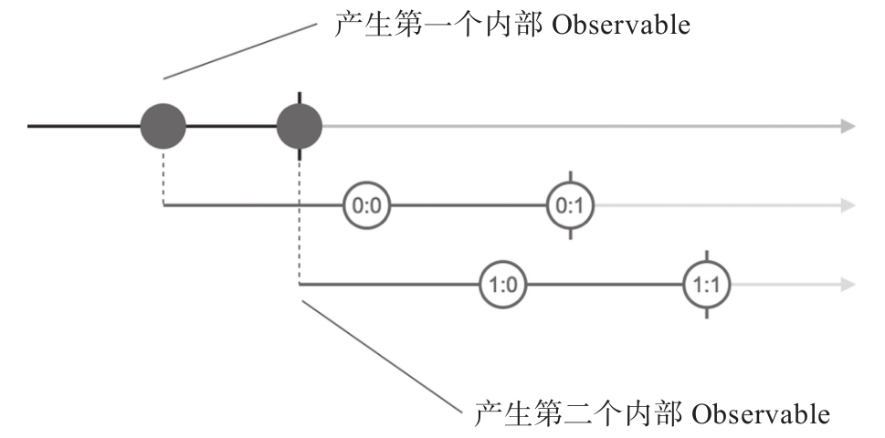

在本章前面的部分，我们介绍了各种组合式操作符，对于数据流的各种组合方式已经覆盖得非常全面，但是，这才刚刚开始，接下来，我们要介绍RxJS中一个十分特殊的概念，叫做“高阶Observable”（Higher Order Observable，也可以称为高阶数据流）。
需要强调所谓“高阶”，并不是“高级”的意思，高阶Observable依然是一个Observable，只不过数据的形式比较特殊。如果读者对“高阶函数”这个概念有了解，应该知道高阶函数也不过是函数，只是这种函数以其他函数为参数，返回的结果也是函数。换句话说，高阶函数就是产生函数的函数；类似，所谓高阶Observable，指的是产生的数据依然是Observable的Observable。
相对于高阶Observable，以前介绍的普通的Observable，称为一阶Observable（First Order Observable）。
用一个实际例子来看看高阶Observable是怎么回事，代码如下：
const ho$ = Observable.interval(1000) .take(2) .map(x => Observable.interval(1500).map(y => x+':'+y).take(2));
上面的代码产生了一个高阶Observable对象ho$（ho就是Higher Order的缩写），首先通过interval和take产生间隔1秒钟的两个数据0和1，但是ho$要的不是这两个数据，因为接下来又通过map把0和1映射为新的Observable对象，这样，ho$这个Observable对象中产生的数据依然是Observable对象，这就是高阶Observable对象。
提示
take从上游数据流拿指定数量的数据之后就完结，在第7章会详细介绍take的用法。
通过图5-11中展示的弹珠图，对于上面代码的逻辑可以理解得更清楚。

图5-11 高阶Observable的弹珠图
高阶Observable的弹珠图和之前见识过的一阶Observable的弹珠图表示方式会有不同，因为其中实际上涉及多个数据流，所以会展示多条横轴。最上面的一条横轴肯定表示的就是主要角色高阶Observable本身，下面的多条横轴代表的就是高阶Observable的某个Observable形式的具体数据。
高阶Observable产生的数据，一般称为内部Observable（Inner Observable），因为它们一般也不展示在外。
在包括RxJS官方文档在内的一些文献中，内部Observable用从高阶Observable里延展出来的斜线时间轴表示，我个人觉得这样表达得并不是很清楚，所以，在本书中，只要是涉及高阶Observable的弹珠图，内部Observable全部用横向时间轴表示，利用从高阶Observable的主时间轴上向下延伸出的虚线表示生成关系。
从弹珠图上可以看到一些关于Observable有趣的特点。高阶Observable完结，不代表内部Observable完结。弹珠图中最上面的横轴，也就是高阶Observable的时间轴，在第2秒的时刻就已经完结，但是两个内部Observable却并不会随主干Observable的完结而完结，因为作为独立的Observable，它们有自己的生命周期。